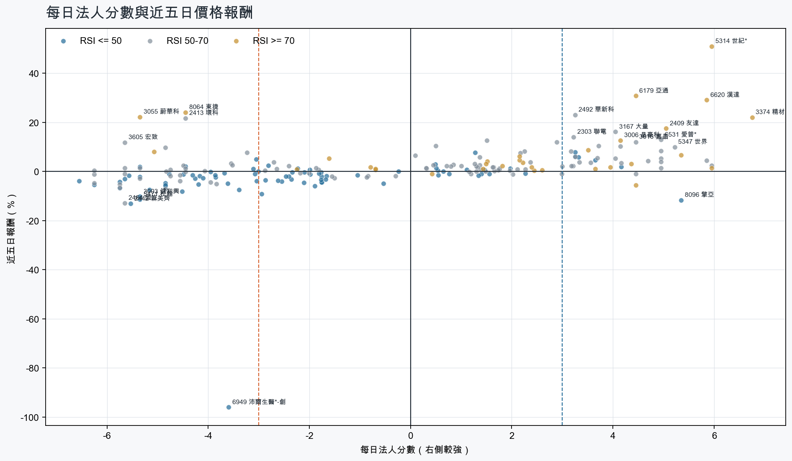
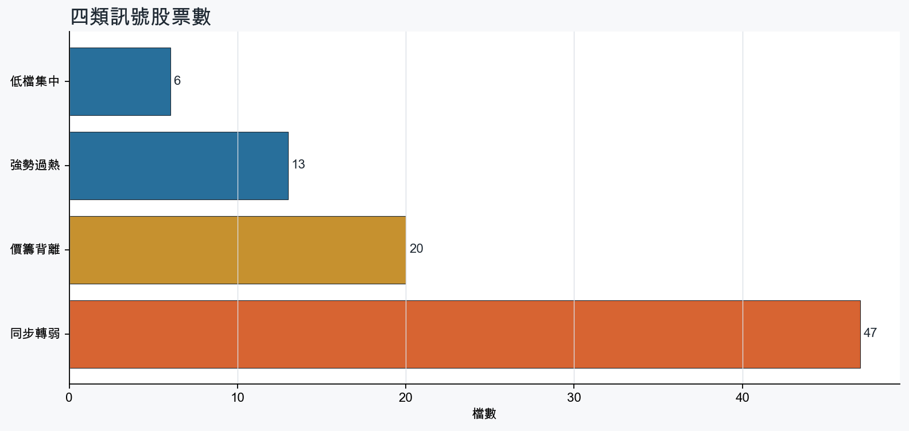
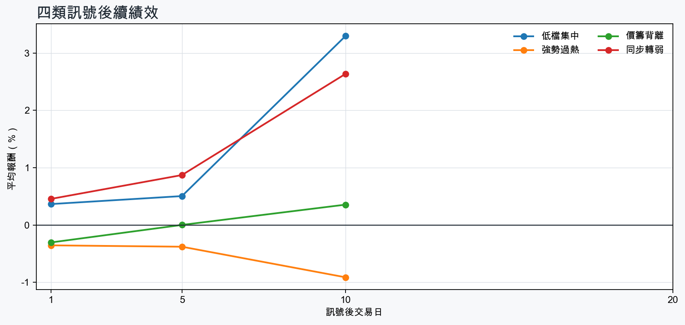

市場情緒偏多
近5日法人合計+676,198 張
篩選池上漲比例56.9%
籌碼好 / RSI低6 檔
籌碼差 / 價跌15 檔



EPS × PE VALUATION
法人常用的相對估值
顯示保守、基準與樂觀估值帶，不把單一數字包裝成精準目標價。
最新累計 EPS 依季數年化 × 同產業有效 P/E 的 Q25／中位數／Q75。排除本公司、非正 P/E，並以 1.5×IQR 排除離群值。估值帶是公開資料篩選值，不是法人目標價；未使用分析師預估 EPS。
MOOD × MONEY
情緒與籌碼雷達
熱度代表被討論程度；情緒分與法人方向分開計算。熱門不等於適合追價，樣本不足也不硬判多空。
| 股票 | 情緒 | 討論熱度 | 情緒 × 籌碼 | 情緒 × 基本面 |
|---|---|---|---|---|
| 3045 台灣大強勢過熱 | 情緒高漲 +84.8信心 95 | 1001 篇 / 455 留言 / 2 則新聞 | 情籌共振法人分 +4.0 | 基本面與情緒共振基本面分 +2.4 |
| 2454 聯發科強勢過熱 | 情緒高漲 +71.2信心 100 | 943 篇 / 285 留言 / 3 則新聞 | 情籌共振法人分 +3.5 | 基本面與情緒共振基本面分 +3.0 |
| 2344 華邦電低檔集中 | 中性分歧 +0.0信心 100 | 893 篇 / 210 留言 / 3 則新聞 | 高熱分歧法人分 +3.2 | 基本面與情緒分歧基本面分 +3.6 |
| 6669 緯穎同步轉弱 | 情緒高漲 +42.3信心 100 | 862 篇 / 172 留言 / 3 則新聞 | 熱門但法人撤退法人分 -5.8 | 基本面與情緒共振基本面分 +3.0 |
| 2409 友達強勢過熱 | 中性分歧 +14.3信心 100 | 762 篇 / 87 留言 / 3 則新聞 | 高熱分歧法人分 +5.0 | 基本面與情緒分歧基本面分 -0.8 |
| 2337 旺宏低檔集中 | 偏空 -32.8信心 68 | 651 篇 / 39 留言 / 3 則新聞 | 法人布局、市場悲觀法人分 +3.6 | 基本面佳、情緒悲觀基本面分 +3.6 |
| 5388 中磊同步轉弱 | 偏多 +20.8信心 70 | 631 篇 / 31 留言 / 3 則新聞 | 熱門但法人撤退法人分 -6.2 | 基本面與情緒共振基本面分 +3.0 |
| 2408 南亞科低檔集中 | 偏多 +19.0信心 66 | 591 篇 / 22 留言 / 3 則新聞 | 情籌混合法人分 +3.2 | 基本面與情緒分歧基本面分 +3.6 |
| 5351 鈺創價籌背離 | 中性分歧 +0.0信心 62 | 581 篇 / 20 留言 / 3 則新聞 | 情籌混合法人分 -3.0 | 基本面與情緒分歧基本面分 +3.6 |
| 6269 台郡價籌背離 | 中性分歧 +0.0信心 56 | 541 篇 / 11 留言 / 3 則新聞 | 情籌混合法人分 -4.5 | 基本面與情緒分歧基本面分 -1.4 |
| 3693 營邦強勢過熱 | 中性分歧 -1.0信心 48 | 531 篇 / 13 留言 / 2 則新聞 | 情籌混合法人分 +5.3 | 基本面與情緒分歧基本面分 +3.6 |
| 3227 原相同步轉弱 | 偏多 +26.5信心 26 | 461 篇 / 10 留言 / 0 則新聞 | 熱門但法人撤退法人分 -5.8 | 基本面與情緒共振基本面分 +3.0 |
01
籌碼好 / RSI低
優先研究基本面；法人續買且價格止穩時，才適合分批觀察。
| 股票 / 確認狀態 | 每日法人分 | 浦男式近似 | 法人加速度 | RSI / 相對強弱 | 量價確認 | 融資融券 | 每週集保確認 | 基本面 | EPS × 同業 P/E 估值 | 情緒 / 情籌 | 近期消息 | 論壇討論 |
|---|---|---|---|---|---|---|---|---|---|---|---|---|
| 2344 華邦電可研究 · 83 分籌碼與價格確認，可列研究清單 | +3.2法人 +78,971 張 / 2 天 | 接近 · 74站上月線；中期均線偏多；法人籌碼偏多；留意買超延續不足、相對強度普通 | +14,894 張近3日 +30,983 / 連續 -2 日 | 48.9相對大盤 -0.6% | 量比 0.48確認分 +3.0成交量不足 | -%融資 - 張 / 融券 - 張 | -1.99 pp1000張 -2.60 pp | 單月營收年增 +291.5%；累計營收年增 +161.0%；2026 Q2 累計 EPS 7.65仍需觀察下一期財報延續性來源：公開資訊觀測站 | 基準 NT$ 407.6估值帶 275.1–704.0現價 179.5 · 低於估值帶 · 距基準 +127.1%2026 Q2 累計 EPS 7.65 → 年化 15.30半導體同業 P/E 17.98／26.64／46.01 · n=149 · 信心中等以 Q2 累計 EPS 年化，不等同分析師全年預估來源：TWSE／TPEx 每日本益比 | 中性分歧 +0.0熱度 89 / 信心 100高熱分歧 | 記憶體虛累累！南亞科、華邦電、旺宏齊下挫 惟「這檔」連拉2根漲停、晶豪科連5漲Yahoo股市 · 09/10南亞科、華邦電、旺宏、力積電、威剛綠油油獨它逆勢紅上半年狂賺18股本 4大法人最新目標價EPS一表看- 上市櫃旺得富理財網 · 09/10 | [標的] 2344 華邦電 多PTT Stock · 09-06 · 154 留言[新聞] 記憶體缺貨惡化！華邦電漲逾半根停板PTT Stock · 09-08 · 34 留言 |
| 2408 南亞科等待確認 · 75 分籌碼有訊號，但價格尚未確認 | +3.2法人 +40,924 張 / 2 天 | 接近 · 64中期均線偏多；法人籌碼偏多；法人買盤加速；留意未站月線、買超延續不足 | +52,949 張近3日 +27,285 / 連續 -2 日 | 46.8相對大盤 -1.8% | 量比 0.51確認分 +0.7收盤跌破20日線；成交量不足 | -%融資 - 張 / 融券 - 張 | +0.16 pp1000張 -0.16 pp | 單月營收年增 +719.6%；累計營收年增 +660.9%；2026 Q2 累計 EPS 23.38仍需觀察下一期財報延續性來源：公開資訊觀測站 | 基準 NT$ 1,246估值帶 840.7–2,151現價 515.0 · 低於估值帶 · 距基準 +141.9%2026 Q2 累計 EPS 23.38 → 年化 46.76半導體同業 P/E 17.98／26.64／46.01 · n=149 · 信心中等以 Q2 累計 EPS 年化，不等同分析師全年預估來源：TWSE／TPEx 每日本益比 | 偏多 +19.0熱度 59 / 信心 66情籌混合 | 記憶體虛累累！南亞科、華邦電、旺宏齊下挫 惟「這檔」連拉2根漲停、晶豪科連5漲Yahoo股市 · 09/10南亞科、華邦電、旺宏、力積電、威剛綠油油獨它逆勢紅上半年狂賺18股本 4大法人最新目標價EPS一表看- 上市櫃旺得富理財網 · 09/10 | [新聞] 南亞科、華邦電繼續飆？高盛曝光大利多PTT Stock · 09-07 · 22 留言 |
| 1513 中興電等待確認 · 65 分籌碼有訊號，但價格尚未確認 | +4.2法人 +2,782 張 / 5 天 | 未命中 · 55法人籌碼偏多；法人買盤加速；買超具延續性；留意未站月線、中期均線未翻多 | +656 張近3日 +1,502 / 連續 +5 日 | 49.2相對大盤 -5.2% | 量比 0.40確認分 -2.0收盤跌破20日線；20日線低於60日線；近20日弱於大盤；成交量不足 | -%融資 - 張 / 融券 - 張 | +1.41 pp1000張 +1.28 pp | 單月營收年增 +3.8%；累計營收年增 +3.5%；2026 Q2 累計 EPS 4.50仍需觀察下一期財報延續性來源：公開資訊觀測站 | 基準 NT$ 183.5估值帶 123.8–288.4現價 165.5 · 估值帶內 · 距基準 +10.9%2026 Q2 累計 EPS 4.50 → 年化 9.00電機機械同業 P/E 13.75／20.39／32.05 · n=72 · 信心中等以 Q2 累計 EPS 年化，不等同分析師全年預估來源：TWSE／TPEx 每日本益比 | 樣本不足 +0.0熱度 0 / 信心 0情緒樣本不足 | 近期沒有通過股票語境篩選的新聞 | 近期沒有明確提及本股的論壇樣本 |
| 3702 大聯大等待確認 · 70 分籌碼有訊號，但價格尚未確認 | +3.3法人 +5,998 張 / 5 天 | 接近 · 71站上月線；法人籌碼偏多；法人買盤加速；留意中期均線未翻多、明顯弱於大盤 | +3,823 張近3日 +4,826 / 連續 +5 日 | 42.8相對大盤 -14.6% | 量比 0.97確認分 +1.020日線低於60日線；近20日弱於大盤 | -%融資 - 張 / 融券 - 張 | -2.93 pp1000張 -3.07 pp | 單月營收年增 +90.8%；累計營收年增 +59.9%；2026 Q2 累計 EPS 8.422026 Q2 累計營益率 2.6%來源：公開資訊觀測站 | 基準 NT$ 204.6估值帶 166.9–396.9現價 108.0 · 低於估值帶 · 距基準 +89.5%2026 Q2 累計 EPS 8.42 → 年化 16.84電子通路同業 P/E 9.91／12.15／23.57 · n=31 · 信心中等以 Q2 累計 EPS 年化，不等同分析師全年預估來源：TWSE／TPEx 每日本益比 | 偏多 +19.8熱度 32 / 信心 20情籌混合 | IC通路雙雄大聯大、文曄 前八月營收雙雙突破兆元UDN · 09/10大聯大前8月營收1.06兆元年增逾6成 首度破兆經濟日報 · 09/10 | 近期沒有明確提及本股的論壇樣本 |
| 8096 擎亞等待確認 · 65 分籌碼有訊號，但價格尚未確認 | +5.3法人 +2,060 張 / 4 天 | 未命中 · 55法人籌碼偏多；法人買盤加速；買超具延續性；留意未站月線、中期均線未翻多 | +1,146 張近3日 +1,306 / 連續 +2 日 | 26.9相對大盤 -28.9% | 量比 2.17確認分 -1.0收盤跌破20日線；20日線低於60日線；近20日弱於大盤 | -0.7%融資 -155 張 / 融券 +13 張 | -6.78 pp1000張 -7.76 pp | 單月營收年增 +523.8%；累計營收年增 +64.5%；2026 Q2 累計 EPS 3.312026 Q2 累計營益率 2.2%來源：公開資訊觀測站 | 基準 NT$ 78.58估值帶 63.35–137.4現價 91.80 · 估值帶內 · 距基準 -14.4%2026 Q2 累計 EPS 3.31 → 年化 6.62電子通路同業 P/E 9.57／11.87／20.75 · n=31 · 信心中等以 Q2 累計 EPS 年化，不等同分析師全年預估來源：TWSE／TPEx 每日本益比 | 樣本不足 +0.0熱度 0 / 信心 0情緒樣本不足 | 近期沒有通過股票語境篩選的新聞 | 近期沒有明確提及本股的論壇樣本 |
| 2337 旺宏等待確認 · 56 分籌碼有訊號，但價格尚未確認 | +3.6法人 +12,919 張 / 4 天 | 未命中 · 55法人籌碼偏多；法人買盤加速；買超具延續性；留意未站月線、中期均線未翻多 | +8,315 張近3日 +2,566 / 連續 -1 日 | 50.0相對大盤 -12.2% | 量比 0.57確認分 -2.4收盤跌破20日線；20日線低於60日線；近20日弱於大盤；成交量不足 | -%融資 - 張 / 融券 - 張 | -3.03 pp1000張 -2.81 pp | 單月營收年增 +180.5%；累計營收年增 +137.8%；2026 Q2 累計 EPS 4.82仍需觀察下一期財報延續性來源：公開資訊觀測站 | 基準 NT$ 246.1估值帶 173.3–443.5現價 122.5 · 低於估值帶 · 距基準 +100.9%2026 Q2 累計 EPS 4.82 → 年化 9.64半導體同業 P/E 17.98／25.53／46.01 · n=149 · 信心較低以 Q2 累計 EPS 年化，不等同分析師全年預估；年化 EPS 為交易所近四季 EPS 的 2.28 倍，需保守解讀來源：TWSE／TPEx 每日本益比 | 偏空 -32.8熱度 65 / 信心 68法人布局、市場悲觀 | 記憶體虛累累！南亞科、華邦電、旺宏齊下挫 惟「這檔」連拉2根漲停、晶豪科連5漲Yahoo股市 · 09/10南亞科、華邦電、旺宏、力積電、威剛綠油油獨它逆勢紅上半年狂賺18股本 4大法人最新目標價EPS一表看- 上市櫃旺得富理財網 · 09/10 | [情報] 2337旺宏 8月營收PTT Stock · 09-07 · 39 留言 |
02
籌碼好 / RSI高
趨勢強但不追價，等待量縮、RSI降溫或回測支撐。
| 股票 / 確認狀態 | 每日法人分 | 浦男式近似 | 法人加速度 | RSI / 相對強弱 | 量價確認 | 融資融券 | 每週集保確認 | 基本面 | EPS × 同業 P/E 估值 | 情緒 / 情籌 | 近期消息 | 論壇討論 |
|---|---|---|---|---|---|---|---|---|---|---|---|---|
| 2455 全新等待拉回 · 96 分等拉回，不追價 | +6.0法人 +3,817 張 / 5 天 | 接近 · 79站上月線；中期均線偏多；法人籌碼偏多；留意法人買盤未加速、量能異常 | -772 張近3日 +2,729 / 連續 +7 日 | 73.6相對大盤 +36.5% | 量比 0.12確認分 +1.1成交量不足；法人買盤減速 | -%融資 - 張 / 融券 - 張 | +5.28 pp1000張 +2.51 pp | 單月營收年增 +45.1%；累計營收年增 +30.5%；2026 Q2 累計 EPS 2.20仍需觀察下一期財報延續性來源：公開資訊觀測站 | 基準 NT$ 92.44估值帶 64.24–181.5現價 532.0 · 高於估值帶 · 距基準 -82.6%2026 Q2 累計 EPS 2.20 → 年化 4.40通信網路同業 P/E 14.60／21.01／41.26 · n=60 · 信心中等以 Q2 累計 EPS 年化，不等同分析師全年預估來源：TWSE／TPEx 每日本益比 | 樣本不足 +0.0熱度 22 / 信心 10情緒樣本不足 | 《價值型投資 最新產業研究報告》全新 (2455-TW) 高速光通訊需求升溫，磷化銦磊晶片加速放量news.cnyes.com · 09/10 | 近期沒有明確提及本股的論壇樣本 |
| 3374 精材等待拉回 · 98 分等拉回，不追價 | +6.8法人 +3,176 張 / 5 天 | 接近 · 73站上月線；中期均線偏多；法人籌碼偏多；留意法人買盤未加速、量能異常 | -1,589 張近3日 +1,138 / 連續 +10 日 | 88.7相對大盤 +48.2% | 量比 0.22確認分 +1.1成交量不足；法人買盤減速 | +0.1%融資 +34 張 / 融券 +21 張 | +3.86 pp1000張 +2.41 pp | 單月營收年增 +31.0%；累計營收年增 +32.6%；2026 Q2 累計 EPS 2.88仍需觀察下一期財報延續性來源：公開資訊觀測站 | 基準 NT$ 146.6估值帶 103.6–258.8現價 488.0 · 高於估值帶 · 距基準 -70.0%2026 Q2 累計 EPS 2.88 → 年化 5.76半導體同業 P/E 17.98／25.45／44.93 · n=148 · 信心中等以 Q2 累計 EPS 年化，不等同分析師全年預估來源：TWSE／TPEx 每日本益比 | 偏多 +29.7熱度 37 / 信心 30情籌共振 | 3374 精材- 🔥 精材8月營收炸出歷史新高🔥 - 股市爆料同學會CMoney · 09/10【11:18 即時新聞】精材(3374)股價上攻至492.5元上漲2.93%，第三代半導體與測試業務成長帶動，多頭均線結構配合法人與主力持續加碼CMoney投資網誌 · 09/10 | 近期沒有明確提及本股的論壇樣本 |
| 3693 營邦等待拉回 · 100 分等拉回，不追價 | +5.3法人 +1,610 張 / 4 天 | 接近 · 83站上月線；中期均線偏多；法人籌碼偏多；留意法人買盤未加速、RSI過熱 | -383 張近3日 +1,026 / 連續 -1 日 | 89.3相對大盤 +23.2% | 量比 1.33確認分 +2.5法人買盤減速 | +1.3%融資 +52 張 / 融券 +10 張 | +5.23 pp1000張 +2.90 pp | 單月營收年增 +148.9%；累計營收年增 +11.1%；2026 Q2 累計 EPS 8.66仍需觀察下一期財報延續性來源：公開資訊觀測站 | 基準 NT$ 266.9估值帶 215.1–382.2現價 691.0 · 高於估值帶 · 距基準 -61.4%2026 Q2 累計 EPS 8.66 → 年化 17.32電腦及週邊同業 P/E 12.42／15.41／22.07 · n=76 · 信心中等以 Q2 累計 EPS 年化，不等同分析師全年預估來源：TWSE／TPEx 每日本益比 | 中性分歧 -1.0熱度 53 / 信心 48情籌混合 | 營邦AI挾AMD和輝達訂單2026年力拚千金股| 雜誌UDN · 09/103693 營邦- 外資續買數百張?(應該比昨日少) - 股市爆料同學會CMoney · 09/10 | [情報] 3693 營邦 115年8月營收PTT Stock · 09-07 · 13 留言 |
| 5314 世紀*等待拉回 · 100 分等拉回，不追價 | +6.0法人 +11,867 張 / 5 天 | 接近 · 86站上月線；中期均線偏多；法人籌碼偏多；留意量能異常、動能位置非最佳 | +3,494 張近3日 +7,380 / 連續 +5 日 | 77.1相對大盤 +215.4% | 量比 4.15確認分 +4.8融資單日增幅偏高 | +5.7%融資 +564 張 / 融券 +53 張 | -1.44 pp1000張 -0.74 pp | 單月營收年增 +149.6%；累計營收年增 +159.9%；2026 Q2 累計 EPS 0.66仍需觀察下一期財報延續性來源：公開資訊觀測站 | 基準 NT$ 18.86估值帶 13.74–31.17現價 46.80 · 高於估值帶 · 距基準 -59.7%2026 Q2 累計 EPS 0.66 → 年化 1.32其他同業 P/E 10.41／14.29／23.61 · n=71 · 信心較低以 Q2 累計 EPS 年化，不等同分析師全年預估；年化 EPS 為交易所近四季 EPS 的 0.29 倍，需保守解讀來源：TWSE／TPEx 每日本益比 | 偏多 +29.7熱度 37 / 信心 30情籌共振 | 世紀*連拉4根漲停 「妖」氣沖天自由財經 · 09/10【即時新聞】世紀*(5314)營收創高亮燈漲停，這「5檔概念股」資金輪動升溫？CMoney投資網誌 · 09/10 | 近期沒有明確提及本股的論壇樣本 |
| 3006 晶豪科等待拉回 · 90 分等拉回，不追價 | +4.2法人 +6,705 張 / 3 天 | 命中 · 89站上月線；中期均線偏多；法人籌碼偏多；留意法人買盤未加速、動能位置非最佳 | -855 張近3日 +2,145 / 連續 +2 日 | 72.1相對大盤 +10.4% | 量比 1.61確認分 +2.5法人買盤減速 | -%融資 - 張 / 融券 - 張 | +0.85 pp1000張 +0.70 pp | 單月營收年增 +491.1%；累計營收年增 +281.5%；2026 Q2 累計 EPS 27.58仍需觀察下一期財報延續性來源：公開資訊觀測站 | 基準 NT$ 1,469估值帶 992.9–2,538現價 312.0 · 低於估值帶 · 距基準 +371.0%2026 Q2 累計 EPS 27.58 → 年化 55.16半導體同業 P/E 18.00／26.64／46.01 · n=149 · 信心中等以 Q2 累計 EPS 年化，不等同分析師全年預估來源：TWSE／TPEx 每日本益比 | 中性分歧 +0.0熱度 32 / 信心 20情籌混合 | 【12:43 即時新聞】晶豪科(3006)股價走強站上313元，受惠利基型記憶體缺貨漲價＋多頭技術結構與主力買盤支撐CMoney投資網誌 · 09/103006 晶豪科- 有夠壞尾盤拉三塊- 股市爆料同學會CMoney · 09/10 | 近期沒有明確提及本股的論壇樣本 |
| 6179 亞通等待拉回 · 100 分等拉回，不追價 | +4.5法人 +9,013 張 / 3 天 | 接近 · 80站上月線；中期均線偏多；法人籌碼偏多；留意量能異常、RSI過熱 | +9,528 張近3日 +9,137 / 連續 +3 日 | 87.4相對大盤 +35.2% | 量比 6.31確認分 +4.8融資單日增幅偏高 | +6.0%融資 +1,259 張 / 融券 +485 張 | +1.13 pp1000張 +0.48 pp | 單月營收年增 +298.4%；累計營收年增 +121.1%；2026 Q2 累計 EPS 1.20仍需觀察下一期財報延續性來源：公開資訊觀測站 | 基準 NT$ 34.18估值帶 24.86–55.20現價 38.20 · 估值帶內 · 距基準 -10.5%2026 Q2 累計 EPS 1.20 → 年化 2.40其他同業 P/E 10.36／14.24／23.00 · n=71 · 信心較低以 Q2 累計 EPS 年化，不等同分析師全年預估；年化 EPS 為交易所近四季 EPS 的 3.29 倍，需保守解讀來源：TWSE／TPEx 每日本益比 | 中性分歧 +0.0熱度 32 / 信心 20情籌混合 | 營收速報 - 亞通(6179)8月營收8.09億元年增率高達223.28％｜新聞快訊｜豐雲學堂sinotrade.com.tw · 09/106179 亞通 - 等等就牙起來了 - 股市爆料同學會CMoney · 09/10 | 近期沒有明確提及本股的論壇樣本 |
| 6620 漢達等待拉回 · 88 分等拉回，不追價 | +5.8法人 +2,799 張 / 4 天 | 接近 · 79站上月線；中期均線偏多；法人籌碼偏多；留意法人買盤未加速、RSI過熱 | -761 張近3日 +1,078 / 連續 -1 日 | 83.4相對大盤 +54.6% | 量比 1.02確認分 +1.9法人買盤減速；融資單日增幅偏高 | +8.2%融資 +519 張 / 融券 -8 張 | +1.07 pp1000張 +0.72 pp | 單月營收年增 +0.6%；2026 Q2 累計 EPS 0.65；2026 Q2 累計營益率 25.4%累計營收年增 -51.1%來源：公開資訊觀測站 | 基準 NT$ 18.79估值帶 15.30–23.66現價 126.5 · 高於估值帶 · 距基準 -85.2%2026 Q2 累計 EPS 0.65 → 年化 1.30生技醫療同業 P/E 11.77／14.45／18.20 · n=83 · 信心較低以 Q2 累計 EPS 年化，不等同分析師全年預估；年化 EPS 為交易所近四季 EPS 的 0.45 倍，需保守解讀來源：TWSE／TPEx 每日本益比 | 樣本不足 +0.0熱度 22 / 信心 10情緒樣本不足 | 6620 漢達 - 恭喜投資人昨日9月9日尾盤果斷出清在最高價 132 元，這是... - 股市爆料同學會CMoney · 09/10 | 近期沒有明確提及本股的論壇樣本 |
| 2412 中華電等待拉回 · 84 分等拉回，不追價 | +3.6法人 +17,379 張 / 5 天 | 接近 · 76站上月線；法人籌碼偏多；法人買盤加速；留意中期均線未翻多、量能尚未確認 | +6,621 張近3日 +14,439 / 連續 +8 日 | 75.0相對大盤 +0.6% | 量比 0.79確認分 +3.020日線低於60日線 | -%融資 - 張 / 融券 - 張 | -0.17 pp1000張 -0.15 pp | 單月營收年增 +3.7%；累計營收年增 +7.2%；2026 Q2 累計 EPS 2.68仍需觀察下一期財報延續性來源：公開資訊觀測站 | 基準 NT$ 111.9估值帶 78.10–228.3現價 139.5 · 估值帶內 · 距基準 -19.8%2026 Q2 累計 EPS 2.68 → 年化 5.36通信網路同業 P/E 14.57／20.88／42.60 · n=59 · 信心中等以 Q2 累計 EPS 年化，不等同分析師全年預估來源：TWSE／TPEx 每日本益比 | 偏多 +29.7熱度 37 / 信心 30情籌共振 | 中華電8月每股賺0.57元居冠台灣大前8月EPS蟬聯第一| 個股情報| 股市UDN · 09/10【2026/08月營收公告】中華電(2412) 八月營收233.09億元，表現亮眼、呈現雙成長，創近20個月以來新高，年增25.61%CMoney · 09/10 | 近期沒有明確提及本股的論壇樣本 |
| 2892 第一金等待拉回 · 95 分等拉回，不追價 | +4.4法人 +57,880 張 / 5 天 | 接近 · 85站上月線；中期均線偏多；法人籌碼偏多；留意量能尚未確認、RSI過熱 | +5,957 張近3日 +37,121 / 連續 +10 日 | 89.2相對大盤 +12.6% | 量比 0.79確認分 +4.3價格、量能與籌碼未見明顯弱項 | -%融資 - 張 / 融券 - 張 | +0.07 pp1000張 +0.01 pp | 單月營收年增 +2.4%；累計營收年增 +18.6%；2026 Q2 累計 EPS 1.24仍需觀察下一期財報延續性來源：公開資訊觀測站 | 基準 NT$ 32.31估值帶 17.68–38.94現價 38.00 · 估值帶內 · 距基準 -15.0%2026 Q2 累計 EPS 1.24 → 年化 2.48金融保險同業 P/E 7.13／13.03／15.70 · n=39 · 信心中等以 Q2 累計 EPS 年化，不等同分析師全年預估來源：TWSE／TPEx 每日本益比 | 樣本不足 +0.0熱度 0 / 信心 0情緒樣本不足 | 近期沒有通過股票語境篩選的新聞 | 近期沒有明確提及本股的論壇樣本 |
| 2454 聯發科等待拉回 · 80 分等拉回，不追價 | +3.5法人 +6,670 張 / 4 天 | 命中 · 84站上月線；中期均線偏多；法人籌碼偏多；留意法人買盤未加速、量能尚未確認 | -5,542 張近3日 +1,406 / 連續 +1 日 | 77.8相對大盤 +9.7% | 量比 0.86確認分 +1.8法人買盤減速 | -%融資 - 張 / 融券 - 張 | -0.43 pp1000張 -1.01 pp | 單月營收年增 +12.2%；累計營收年增 +0.8%；2026 Q2 累計 EPS 30.44仍需觀察下一期財報延續性來源：公開資訊觀測站 | 基準 NT$ 1,549估值帶 1,095–2,735現價 4,720 · 高於估值帶 · 距基準 -67.2%2026 Q2 累計 EPS 30.44 → 年化 60.88半導體同業 P/E 17.98／25.45／44.93 · n=148 · 信心中等以 Q2 累計 EPS 年化，不等同分析師全年預估來源：TWSE／TPEx 每日本益比 | 情緒高漲 +71.2熱度 94 / 信心 100情籌共振 | 台股二哥也創高！聯發科8月營收641億元 月增32%、年增逾44%Yahoo股市 · 09/10超乎預期！聯發科8月營收飆新高自由財經 · 09/10 | [新聞] 聯發科包場六福村水陸雙樂園 近2.5萬名PTT Stock · 09-06 · 135 留言[情報] 2454 聯發科 8月營收PTT Stock · 09-10 · 79 留言 |
| 3045 台灣大等待拉回 · 82 分等拉回，不追價 | +4.0法人 +11,181 張 / 5 天 | 接近 · 73站上月線；中期均線偏多；法人籌碼偏多；留意法人買盤未加速、量能異常 | -4,158 張近3日 +8,314 / 連續 +10 日 | 81.2相對大盤 +8.6% | 量比 0.40確認分 +1.8成交量不足；法人買盤減速 | -%融資 - 張 / 融券 - 張 | +0.35 pp1000張 +0.10 pp | 單月營收年增 +7.1%；累計營收年增 +4.2%；2026 Q2 累計 EPS 2.86仍需觀察下一期財報延續性來源：公開資訊觀測站 | 基準 NT$ 119.4估值帶 83.34–243.7現價 120.0 · 估值帶內 · 距基準 -0.5%2026 Q2 累計 EPS 2.86 → 年化 5.72通信網路同業 P/E 14.57／20.88／42.60 · n=59 · 信心中等以 Q2 累計 EPS 年化，不等同分析師全年預估來源：TWSE／TPEx 每日本益比 | 情緒高漲 +84.8熱度 100 / 信心 95情籌共振 | 中華電8月每股賺0.57元居冠台灣大前8月EPS蟬聯第一| 個股情報| 股市UDN · 09/10前八月電信每股獲利王出爐！台灣大EPS 3.78元奪冠、稅後純益114.8億元- 產業ctee.com.tw · 09/10 | [新聞] 傳Google台灣大裁員3至5成 官方澄清：PTT Stock · 09-08 · 455 留言 |
| 8431 匯鑽科等待拉回 · 77 分等拉回，不追價 | +4.5法人 +1,402 張 / 3 天 | 接近 · 74站上月線；中期均線偏多；法人籌碼偏多；留意法人買盤未加速、基本面偏弱 | -288 張近3日 +649 / 連續 +1 日 | 70.4相對大盤 +23.2% | 量比 1.03確認分 +2.5法人買盤減速 | +0.3%融資 +15 張 / 融券 -26 張 | +5.45 pp1000張 -1.04 pp | 尚無明確成長訊號單月營收年增 -18.5%；累計營收年增 -7.5%；2026 Q2 累計 EPS -2.31來源：公開資訊觀測站 | 不適用年化 EPS 非正數，不適合使用本益比估值 | 樣本不足 +0.0熱度 0 / 信心 0情緒樣本不足 | 近期沒有通過股票語境篩選的新聞 | 近期沒有明確提及本股的論壇樣本 |
| 2409 友達等待拉回 · 81 分等拉回，不追價 | +5.0法人 +338,681 張 / 4 天 | 接近 · 58站上月線；法人籌碼偏多；買超具延續性；留意中期均線未翻多、法人買盤未加速 | -39,877 張近3日 +177,122 / 連續 +4 日 | 86.8相對大盤 +19.2% | 量比 2.21確認分 +2.520日線低於60日線；法人買盤減速 | -%融資 - 張 / 融券 - 張 | +0.07 pp1000張 +0.03 pp | 2026 Q2 累計 EPS 0.03單月營收年增 -2.6%；累計營收年增 -1.2%；2026 Q2 累計營益率 -0.3%來源：公開資訊觀測站 | 基準 NT$ 1.41估值帶 0.77–2.23現價 31.20 · 高於估值帶 · 距基準 -95.5%2026 Q2 累計 EPS 0.03 → 年化 0.06光電同業 P/E 12.83／23.44／37.25 · n=69 · 信心較低以 Q2 累計 EPS 年化，不等同分析師全年預估；年化 EPS 為交易所近四季 EPS 的 0.25 倍，需保守解讀來源：TWSE／TPEx 每日本益比 | 中性分歧 +14.3熱度 76 / 信心 100高熱分歧 | 外資轉賣超383億元玩「配對交易」 買友達與南亞 砍群創及富喬news.cnyes.com · 09/10光電整片綠！群創、友達、大立光全下殺 「這檔」再飆第2根漲停、光鼎也亮燈Yahoo股市 · 09/10 | [情報] 2409 友達 115年8月營收PTT Stock · 09-09 · 45 留言[標的] 2409 友達 開盤手速空？ 討論PTT Stock · 09-09 · 42 留言 |
03
籌碼差 / 股價上漲
可能是事件行情或軋空；沒有籌碼改善前避免追高。
| 股票 / 確認狀態 | 每日法人分 | 浦男式近似 | 法人加速度 | RSI / 相對強弱 | 量價確認 | 融資融券 | 每週集保確認 | 基本面 | EPS × 同業 P/E 估值 | 情緒 / 情籌 | 近期消息 | 論壇討論 |
|---|---|---|---|---|---|---|---|---|---|---|---|---|
| 3055 蔚華科風險警示 · 52 分背離警戒，避免追高 | -5.3法人 -1,906 張 / 1 天 | 未命中 · 53站上月線；法人買盤加速；明顯強於大盤；留意中期均線未翻多、法人籌碼偏弱 | +980 張近3日 -830 / 連續 -2 日 | 77.8相對大盤 +33.0% | 量比 2.28確認分 +6.520日線低於60日線 | -%融資 - 張 / 融券 - 張 | -3.88 pp1000張 -5.23 pp | 單月營收年增 +173.5%；累計營收年增 +0.1%2026 Q2 累計 EPS -0.03；2026 Q2 累計營益率 -51.5%來源：公開資訊觀測站 | 不適用年化 EPS 非正數，不適合使用本益比估值 | 樣本不足 +0.0熱度 0 / 信心 0情緒樣本不足 | 近期沒有通過股票語境篩選的新聞 | 近期沒有明確提及本股的論壇樣本 |
| 8064 東捷風險警示 · 64 分背離警戒，避免追高 | -4.5法人 -2,653 張 / 2 天 | 接近 · 60站上月線；法人買盤加速；明顯強於大盤；留意中期均線未翻多、法人籌碼偏弱 | +349 張近3日 -1,846 / 連續 -2 日 | 73.5相對大盤 +17.9% | 量比 1.81確認分 +5.920日線低於60日線；融資單日增幅偏高 | +20.4%融資 +1,996 張 / 融券 -125 張 | -0.40 pp1000張 +0.62 pp | 累計營收年增 +7.7%；2026 Q2 累計 EPS 0.52單月營收年增 -40.7%；2026 Q2 累計營益率 5.2%來源：公開資訊觀測站 | 基準 NT$ 24.16估值帶 13.10–37.56現價 126.5 · 高於估值帶 · 距基準 -80.9%2026 Q2 累計 EPS 0.52 → 年化 1.04光電同業 P/E 12.60／23.23／36.12 · n=68 · 信心較低以 Q2 累計 EPS 年化，不等同分析師全年預估；年化 EPS 為交易所近四季 EPS 的 0.43 倍，需保守解讀來源：TWSE／TPEx 每日本益比 | 樣本不足 +0.0熱度 0 / 信心 0情緒樣本不足 | 近期沒有通過股票語境篩選的新聞 | 近期沒有明確提及本股的論壇樣本 |
| 2413 環科風險警示 · 48 分背離警戒，避免追高 | -4.5法人 -2,814 張 / 2 天 | 接近 · 65站上月線；中期均線偏多；明顯強於大盤；留意法人籌碼偏弱、法人買盤未加速 | -978 張近3日 -2,000 / 連續 -1 日 | 68.4相對大盤 +9.7% | 量比 6.61確認分 +1.4法人買盤減速 | -%融資 - 張 / 融券 - 張 | -0.28 pp1000張 +2.22 pp | 單月營收年增 +19.8%；累計營收年增 +15.9%；2026 Q2 累計 EPS 2.392026 Q2 累計營益率 3.4%來源：公開資訊觀測站 | 基準 NT$ 123.2估值帶 85.32–218.4現價 50.70 · 低於估值帶 · 距基準 +143.1%2026 Q2 累計 EPS 2.39 → 年化 4.78電子零組件同業 P/E 17.85／25.78／45.69 · n=150 · 信心中等以 Q2 累計 EPS 年化，不等同分析師全年預估來源：TWSE／TPEx 每日本益比 | 偏多 +29.7熱度 37 / 信心 30熱門但法人撤退 | 環科AI電源出貨強勁 EPS上看4元 股價留意50元關卡理財周刊 · 09/10【10:55 即時新聞】環科(2413)股價上攻站上5字頭，AI網通電源題材帶動買盤迴流＋突破半年線後多頭結構延續CMoney投資網誌 · 09/10 | 近期沒有明確提及本股的論壇樣本 |
| 8996 高力風險警示 · 55 分背離警戒，避免追高 | -4.8法人 -1,910 張 / 1 天 | 接近 · 71站上月線；中期均線偏多；法人買盤加速；留意法人籌碼偏弱、買超延續不足 | +2,850 張近3日 +255 / 連續 -1 日 | 61.4相對大盤 -0.8% | 量比 1.20確認分 +4.3價格、量能與籌碼未見明顯弱項 | -%融資 - 張 / 融券 - 張 | -2.53 pp1000張 -6.00 pp | 單月營收年增 +57.6%；累計營收年增 +115.4%；2026 Q2 累計 EPS 8.69仍需觀察下一期財報延續性來源：公開資訊觀測站 | 基準 NT$ 352.8估值帶 241.1–552.5現價 1,300 · 高於估值帶 · 距基準 -72.9%2026 Q2 累計 EPS 8.69 → 年化 17.38電機機械同業 P/E 13.87／20.30／31.79 · n=73 · 信心中等以 Q2 累計 EPS 年化，不等同分析師全年預估來源：TWSE／TPEx 每日本益比 | 中性分歧 +0.0熱度 37 / 信心 30情籌混合 | 《台北股市》注意股：10日23檔蔚華科、宏致、高力、華星光、聯亞等- 上市櫃旺得富理財網 · 09/10高力8月營收返12億，液冷出貨回溫- 新聞MoneyDJ · 09/07 | 近期沒有明確提及本股的論壇樣本 |
| 3605 宏致風險警示 · 28 分背離警戒，避免追高 | -5.7法人 -5,465 張 / 1 天 | 未命中 · 55站上月線；中期均線偏多；基本面有支撐；留意法人籌碼偏弱、法人買盤未加速 | -4,561 張近3日 -4,212 / 連續 -4 日 | 61.7相對大盤 -5.0% | 量比 0.69確認分 -1.5近20日弱於大盤；法人買盤減速 | -%融資 - 張 / 融券 - 張 | +1.11 pp1000張 +0.08 pp | 單月營收年增 +29.8%；累計營收年增 +17.2%；2026 Q2 累計 EPS 1.892026 Q2 累計營益率 6.4%來源：公開資訊觀測站 | 基準 NT$ 96.58估值帶 67.09–172.7現價 128.0 · 估值帶內 · 距基準 -24.6%2026 Q2 累計 EPS 1.89 → 年化 3.78電子零組件同業 P/E 17.75／25.55／45.69 · n=150 · 信心中等以 Q2 累計 EPS 年化，不等同分析師全年預估來源：TWSE／TPEx 每日本益比 | 中性分歧 +0.0熱度 37 / 信心 30情籌混合 | 《台北股市》注意股：10日23檔蔚華科、宏致、高力、華星光、聯亞等- 上市櫃旺得富理財網 · 09/10宏致挑戰外商霸權 搶攻高速傳輸！十年磨一劍，打進AI伺服器供應鏈財訊 · 08/16 | 近期沒有明確提及本股的論壇樣本 |
| 3715 定穎投控風險警示 · 59 分背離警戒，避免追高 | -3.2法人 -1,972 張 / 2 天 | 接近 · 68站上月線；法人買盤加速；明顯強於大盤；留意中期均線未翻多、法人籌碼偏弱 | +956 張近3日 -997 / 連續 -1 日 | 63.5相對大盤 +6.1% | 量比 1.48確認分 +4.520日線低於60日線 | -%融資 - 張 / 融券 - 張 | -1.29 pp1000張 -1.46 pp | 單月營收年增 +69.7%；累計營收年增 +40.9%2026 Q2 累計 EPS -1.55；2026 Q2 累計營益率 1.6%來源：公開資訊觀測站 | 不適用年化 EPS 非正數，不適合使用本益比估值 | 偏多 +29.7熱度 37 / 信心 30熱門但法人撤退 | 定穎投控8月營收登頂泰國/黃石新產能2027接棒- 新聞MoneyDJ · 09/09定穎投控(3715)8月營收超預期16.3%！AI量產延至第四季，擴產計畫卻未縮手news.cnyes.com · 09/08 | 近期沒有明確提及本股的論壇樣本 |
| 6168 宏齊風險警示 · 68 分背離警戒，避免追高 | -5.1法人 -1,916 張 / 1 天 | 接近 · 74站上月線；中期均線偏多；法人買盤加速；留意法人籌碼偏弱、買超延續不足 | +2,837 張近3日 +14 / 連續 -1 日 | 71.7相對大盤 +16.3% | 量比 1.89確認分 +6.5價格、量能與籌碼未見明顯弱項 | -%融資 - 張 / 融券 - 張 | +2.05 pp1000張 -0.16 pp | 單月營收年增 +12.8%；累計營收年增 +7.8%；2026 Q2 累計 EPS 0.172026 Q2 累計營益率 -0.4%來源：公開資訊觀測站 | 基準 NT$ 7.97估值帶 4.36–12.67現價 29.80 · 高於估值帶 · 距基準 -73.3%2026 Q2 累計 EPS 0.17 → 年化 0.34光電同業 P/E 12.83／23.44／37.25 · n=69 · 信心中等以 Q2 累計 EPS 年化，不等同分析師全年預估來源：TWSE／TPEx 每日本益比 | 中性分歧 +0.0熱度 37 / 信心 30情籌混合 | 記憶體虛累累！南亞科、華邦電、旺宏齊下挫 惟「這檔」連拉2根漲停、晶豪科連5漲Yahoo股市 · 09/10營收：宏齊(6168)8月營收2億2137萬元，月增率7.69%，年增率18.52%富聯網 · 09/10 | 近期沒有明確提及本股的論壇樣本 |
| 3645 達邁風險警示 · 13 分背離警戒，避免追高 | -6.2法人 -4,495 張 / 0 天 | 未命中 · 46站上月線；量價健康；動能強但未過熱；留意中期均線未翻多、法人籌碼偏弱 | -3,653 張近3日 -4,258 / 連續 -10 日 | 60.4相對大盤 -0.7% | 量比 1.99確認分 -1.220日線低於60日線；法人買盤減速 | -%融資 - 張 / 融券 - 張 | -3.89 pp1000張 -6.80 pp | 2026 Q2 累計 EPS 1.52；2026 Q2 累計營益率 21.3%單月營收年增 -32.6%；累計營收年增 -1.5%來源：公開資訊觀測站 | 基準 NT$ 77.67估值帶 53.96–138.9現價 70.60 · 估值帶內 · 距基準 +10.0%2026 Q2 累計 EPS 1.52 → 年化 3.04電子零組件同業 P/E 17.75／25.55／45.69 · n=150 · 信心中等以 Q2 累計 EPS 年化，不等同分析師全年預估來源：TWSE／TPEx 每日本益比 | 樣本不足 +0.0熱度 22 / 信心 10情緒樣本不足 | 【11:31 即時新聞】達邁(3645)股價上漲至74.4元、漲幅3.62%，受軟板與PI材料題材支撐，短期反彈但主力與法人賣壓仍重CMoney投資網誌 · 09/08 | 近期沒有明確提及本股的論壇樣本 |
| 2399 映泰風險警示 · 38 分背離警戒，避免追高 | -4.5法人 -2,246 張 / 2 天 | 未命中 · 53中期均線偏多；法人買盤加速；相對大盤偏強；留意未站月線、法人籌碼偏弱 | +1,962 張近3日 -551 / 連續 +2 日 | 48.6相對大盤 +0.1% | 量比 0.23確認分 +1.2收盤跌破20日線；成交量不足 | -%融資 - 張 / 融券 - 張 | -0.56 pp1000張 -2.39 pp | 單月營收年增 +10.7%；累計營收年增 +2.8%；2026 Q2 累計 EPS 3.542026 Q2 累計營益率 -12.2%來源：公開資訊觀測站 | 基準 NT$ 111.8估值帶 88.50–168.9現價 45.35 · 低於估值帶 · 距基準 +146.5%2026 Q2 累計 EPS 3.54 → 年化 7.08電腦及週邊同業 P/E 12.50／15.79／23.85 · n=77 · 信心中等以 Q2 累計 EPS 年化，不等同分析師全年預估來源：TWSE／TPEx 每日本益比 | 樣本不足 +0.0熱度 0 / 信心 0情緒樣本不足 | 近期沒有通過股票語境篩選的新聞 | 近期沒有明確提及本股的論壇樣本 |
| 5351 鈺創風險警示 · 24 分背離警戒，避免追高 | -3.0法人 -4,905 張 / 3 天 | 未命中 · 41中期均線偏多；買超具延續性；基本面有支撐；留意未站月線、法人籌碼偏弱 | -4,604 張近3日 -7,484 / 連續 -1 日 | 39.7相對大盤 -12.5% | 量比 0.38確認分 -4.8收盤跌破20日線；近20日弱於大盤；成交量不足；法人買盤減速 | -1.2%融資 -158 張 / 融券 +0 張 | +1.24 pp1000張 +2.09 pp | 單月營收年增 +590.8%；累計營收年增 +481.1%；2026 Q2 累計 EPS 6.69仍需觀察下一期財報延續性來源：公開資訊觀測站 | 基準 NT$ 356.4估值帶 240.8–615.6現價 115.5 · 低於估值帶 · 距基準 +208.6%2026 Q2 累計 EPS 6.69 → 年化 13.38半導體同業 P/E 18.00／26.64／46.01 · n=149 · 信心較低以 Q2 累計 EPS 年化，不等同分析師全年預估；年化 EPS 為交易所近四季 EPS 的 2.07 倍，需保守解讀來源：TWSE／TPEx 每日本益比 | 中性分歧 +0.0熱度 58 / 信心 62情籌混合 | 台股漲77點收47183點 鈺創盧超群喊「大多頭」Yahoo新聞 · 09/09台股漲77點收47183點 鈺創盧超群喊「大多頭」 | EBC 東森新聞LINE TODAY · 09/09 | [情報] 鈺創8月營收PTT Stock · 09-07 · 20 留言 |
| 3036 文曄風險警示 · 31 分背離警戒，避免追高 | -3.1法人 -7,198 張 / 1 天 | 未命中 · 32法人買盤加速；基本面有支撐；流動性足夠；留意未站月線、中期均線未翻多 | +3,788 張近3日 -3,706 / 連續 -1 日 | 31.5相對大盤 -12.5% | 量比 0.89確認分 -1.8收盤跌破20日線；20日線低於60日線；近20日弱於大盤 | -%融資 - 張 / 融券 - 張 | -2.66 pp1000張 -2.77 pp | 單月營收年增 +94.9%；累計營收年增 +111.0%；2026 Q2 累計 EPS 13.002026 Q2 累計營益率 2.1%來源：公開資訊觀測站 | 基準 NT$ 315.9估值帶 249.3–612.8現價 192.5 · 低於估值帶 · 距基準 +64.1%2026 Q2 累計 EPS 13.00 → 年化 26.00電子通路同業 P/E 9.59／12.15／23.57 · n=31 · 信心中等以 Q2 累計 EPS 年化，不等同分析師全年預估來源：TWSE／TPEx 每日本益比 | 偏多 +29.7熱度 37 / 信心 30熱門但法人撤退 | IC通路雙雄大聯大、文曄 前八月營收雙雙突破兆元UDN · 09/10業績支撐 文曄盤中股價逆勢揚UDN · 09/10 | 近期沒有明確提及本股的論壇樣本 |
| 1528 恩德風險警示 · 29 分背離警戒，避免追高 | -3.5法人 -2,098 張 / 3 天 | 未命中 · 39站上月線；買超具延續性；量價健康；留意中期均線未翻多、法人籌碼偏弱 | -2,305 張近3日 -2,359 / 連續 -2 日 | 55.1相對大盤 -2.5% | 量比 1.73確認分 -1.620日線低於60日線；法人買盤減速；流動性偏低 | -%融資 - 張 / 融券 - 張 | +0.56 pp1000張 +1.05 pp | 單月營收年增 +19.7%；累計營收年增 +12.5%2026 Q2 累計 EPS -0.60；2026 Q2 累計營益率 -4.0%來源：公開資訊觀測站 | 不適用年化 EPS 非正數，不適合使用本益比估值 | 中性分歧 +0.0熱度 32 / 信心 20情籌混合 | 營收：恩德(1528)8月營收3億8329萬元，月增率20.53%，年增率70.84%富聯網 · 09/10《業績-電機》恩德8月營收為3.83億元，年增70.84%富聯網 · 09/10 | 近期沒有明確提及本股的論壇樣本 |
| 4931 新盛力風險警示 · 21 分背離警戒，避免追高 | -5.3法人 -2,013 張 / 1 天 | 未命中 · 41中期均線偏多；基本面有支撐；流動性足夠；留意未站月線、法人籌碼偏弱 | -479 張近3日 -1,291 / 連續 -1 日 | 37.1相對大盤 -8.5% | 量比 0.68確認分 -4.2收盤跌破20日線；近20日弱於大盤；法人買盤減速 | -1.0%融資 -97 張 / 融券 +31 張 | +0.75 pp1000張 +6.47 pp | 單月營收年增 +159.5%；累計營收年增 +82.0%；2026 Q2 累計 EPS 3.69仍需觀察下一期財報延續性來源：公開資訊觀測站 | 基準 NT$ 113.7估值帶 91.66–162.9現價 244.0 · 高於估值帶 · 距基準 -53.4%2026 Q2 累計 EPS 3.69 → 年化 7.38電腦及週邊同業 P/E 12.42／15.41／22.07 · n=76 · 信心中等以 Q2 累計 EPS 年化，不等同分析師全年預估來源：TWSE／TPEx 每日本益比 | 中性分歧 +0.0熱度 37 / 信心 30情籌混合 | 焦點股》新盛力：BBU發光 營收表現不俗自由財經 · 09/09營收速報 - 新盛力(4931)8月營收4.95億元年增率高達125.87％TradingView · 09/07 | 近期沒有明確提及本股的論壇樣本 |
| 2009 第一銅風險警示 · 70 分背離警戒，避免追高 | -3.5法人 -1,952 張 / 1 天 | 接近 · 71站上月線；中期均線偏多；法人買盤加速；留意法人籌碼偏弱、買超延續不足 | +649 張近3日 -815 / 連續 -2 日 | 52.0相對大盤 -0.6% | 量比 1.38確認分 +4.3價格、量能與籌碼未見明顯弱項 | -%融資 - 張 / 融券 - 張 | +1.48 pp1000張 +1.27 pp | 單月營收年增 +21.4%；累計營收年增 +20.8%；2026 Q2 累計 EPS 0.49仍需觀察下一期財報延續性來源：公開資訊觀測站 | 基準 NT$ 12.05估值帶 9.39–14.33現價 40.25 · 高於估值帶 · 距基準 -70.0%2026 Q2 累計 EPS 0.49 → 年化 0.98鋼鐵工業同業 P/E 9.58／12.30／14.62 · n=28 · 信心中等以 Q2 累計 EPS 年化，不等同分析師全年預估來源：TWSE／TPEx 每日本益比 | 偏多 +19.8熱度 32 / 信心 20情籌混合 | 9／8台股雷達｜華邦電、第一銅、藥華藥股價強勢原因曝- 證券ctee.com.tw · 09/08【10:57 即時新聞】第一銅(2009)股價上漲4.36%、報價40.65，受惠國際銅價高檔與營收成長題材＋短線均線上方高檔整理、主力近5日轉為偏空調節CMoney投資網誌 · 09/08 | 近期沒有明確提及本股的論壇樣本 |
| 6269 台郡風險警示 · 43 分背離警戒，避免追高 | -4.5法人 -2,943 張 / 1 天 | 未命中 · 47中期均線偏多；法人買盤加速；相對大盤偏強；留意未站月線、法人籌碼偏弱 | +1,754 張近3日 -2,645 / 連續 -1 日 | 56.0相對大盤 +0.5% | 量比 0.76確認分 +1.9收盤跌破20日線 | -%融資 - 張 / 融券 - 張 | +3.22 pp1000張 +4.19 pp | 單月營收年增 +4.0%；累計營收年增 +2.0%2026 Q2 累計 EPS -4.27；2026 Q2 累計營益率 -15.7%來源：公開資訊觀測站 | 不適用年化 EPS 非正數，不適合使用本益比估值 | 中性分歧 +0.0熱度 54 / 信心 56情籌混合 | 6269 台郡- 果粉等到了！蘋果首款摺疊機將亮相10檔蘋概股卡位迎商機- 股市爆料同學會CMoney · 09/10【11:43 即時新聞】臺郡(6269)股價上漲逾7%，人形機器人軟板題材帶動買盤迴流＋短線跌深反彈扭轉技術面壓力CMoney · 09/09 | [情報] 6269台郡 8月營收PTT Stock · 09-07 · 11 留言 |
04
籌碼差 / 股價下跌
籌碼與價格同弱，原則上迴避，等待法人與大戶同時回補。
| 股票 / 確認狀態 | 每日法人分 | 浦男式近似 | 法人加速度 | RSI / 相對強弱 | 量價確認 | 融資融券 | 每週集保確認 | 基本面 | EPS × 同業 P/E 估值 | 情緒 / 情籌 | 近期消息 | 論壇討論 |
|---|---|---|---|---|---|---|---|---|---|---|---|---|
| 6949 沛爾生醫*-創風險警示 · 4 分迴避，等待籌碼翻正 | -3.6法人 -7,368 張 / 1 天 | 未命中 · 15中期均線偏多；流動性足夠；留意未站月線、法人籌碼偏弱 | -8,232 張近3日 -7,800 / 連續 -3 日 | 19.1相對大盤 -96.2% | 量比 4.88確認分 -6.2收盤跌破20日線；近20日弱於大盤；法人買盤減速 | -%融資 - 張 / 融券 - 張 | +26.56 pp1000張 +38.28 pp | 尚無明確成長訊號單月營收年增 -22.6%；累計營收年增 -14.6%；2026 Q2 累計 EPS -2.54來源：公開資訊觀測站 | 不適用年化 EPS 非正數，不適合使用本益比估值 | 中性分歧 +0.0熱度 32 / 信心 20情籌混合 | 【09:28 即時新聞】沛爾生醫*-創(6949)亮燈漲停，拆股後連日殺低出現技術性反彈＋前一日主力與外資持續大幅調節壓力未解CMoney投資網誌 · 09/10《生醫股》注意股：沛爾生醫*-創 近5日跌11.09%富聯網 · 09/10 | 近期沒有明確提及本股的論壇樣本 |
| 2442 新美齊風險警示 · 23 分迴避，等待籌碼翻正 | -5.5法人 -2,666 張 / 0 天 | 未命中 · 27法人買盤加速；基本面有支撐；流動性足夠；留意未站月線、中期均線未翻多 | +1,209 張近3日 -1,065 / 連續 -10 日 | 10.2相對大盤 -16.2% | 量比 0.59確認分 -2.4收盤跌破20日線；20日線低於60日線；近20日弱於大盤；成交量不足 | -%融資 - 張 / 融券 - 張 | -1.55 pp1000張 -0.34 pp | 單月營收年增 +233.9%；累計營收年增 +396.7%；2026 Q2 累計 EPS 1.16仍需觀察下一期財報延續性來源：公開資訊觀測站 | 基準 NT$ 22.88估值帶 16.19–30.95現價 15.65 · 低於估值帶 · 距基準 +46.2%2026 Q2 累計 EPS 1.16 → 年化 2.32建材營造同業 P/E 6.98／9.86／13.34 · n=63 · 信心較低以 Q2 累計 EPS 年化，不等同分析師全年預估；年化 EPS 為交易所近四季 EPS 的 0.46 倍，需保守解讀來源：TWSE／TPEx 每日本益比 | 樣本不足 +0.0熱度 22 / 信心 10情緒樣本不足 | 營收：新美齊(2442)8月營收2458萬元，月增率-48.76%，年增率19.87%富聯網 · 09/10 | 近期沒有明確提及本股的論壇樣本 |
| 5471 松翰風險警示 · 5 分迴避，等待籌碼翻正 | -5.3法人 -2,300 張 / 1 天 | 未命中 · 26基本面有支撐；流動性足夠；留意未站月線、中期均線未翻多 | -1,976 張近3日 -2,109 / 連續 -4 日 | 40.3相對大盤 -10.6% | 量比 0.33確認分 -6.3收盤跌破20日線；20日線低於60日線；近20日弱於大盤；成交量不足；法人買盤減速 | -%融資 - 張 / 融券 - 張 | +0.08 pp1000張 +0.02 pp | 單月營收年增 +37.7%；累計營收年增 +30.0%；2026 Q2 累計 EPS 1.20仍需觀察下一期財報延續性來源：公開資訊觀測站 | 基準 NT$ 61.27估值帶 43.15–110.4現價 53.10 · 估值帶內 · 距基準 +15.4%2026 Q2 累計 EPS 1.20 → 年化 2.40半導體同業 P/E 17.98／25.53／46.01 · n=149 · 信心中等以 Q2 累計 EPS 年化，不等同分析師全年預估來源：TWSE／TPEx 每日本益比 | 樣本不足 +0.0熱度 0 / 信心 0情緒樣本不足 | 近期沒有通過股票語境篩選的新聞 | 近期沒有明確提及本股的論壇樣本 |
| 5388 中磊風險警示 · 16 分迴避，等待籌碼翻正 | -6.2法人 -4,422 張 / 0 天 | 未命中 · 37法人買盤加速；量價健康；基本面有支撐；留意未站月線、中期均線未翻多 | +334 張近3日 -3,418 / 連續 -10 日 | 10.8相對大盤 -14.3% | 量比 1.14確認分 -1.6收盤跌破20日線；20日線低於60日線；近20日弱於大盤 | -%融資 - 張 / 融券 - 張 | -10.14 pp1000張 -9.60 pp | 單月營收年增 +51.3%；累計營收年增 +56.9%；2026 Q2 累計 EPS 2.592026 Q2 累計營益率 3.1%來源：公開資訊觀測站 | 基準 NT$ 109.5估值帶 75.47–220.7現價 71.10 · 低於估值帶 · 距基準 +54.0%2026 Q2 累計 EPS 2.59 → 年化 5.18通信網路同業 P/E 14.57／21.14／42.60 · n=59 · 信心中等以 Q2 累計 EPS 年化，不等同分析師全年預估來源：TWSE／TPEx 每日本益比 | 偏多 +20.8熱度 63 / 信心 70熱門但法人撤退 | 中磊8月營收維持高檔 前3季營收將贏去年自由財經 · 09/07中磊營收／8月70.44億元、年增45% 連三月站穩70億元關卡經濟日報 · 09/07 | [新聞] 中磊8月營收維持高檔 前3季營收將贏去年PTT Stock · 09-07 · 31 留言 |
| 2464 盟立風險警示 · 38 分迴避，等待籌碼翻正 | -5.7法人 -8,639 張 / 1 天 | 未命中 · 55站上月線；中期均線偏多；基本面有支撐；留意法人籌碼偏弱、法人買盤未加速 | -2,997 張近3日 -5,236 / 連續 -4 日 | 55.1相對大盤 -3.3% | 量比 0.87確認分 -1.1近20日弱於大盤；法人買盤減速 | -%融資 - 張 / 融券 - 張 | +11.25 pp1000張 +10.27 pp | 單月營收年增 +62.1%；累計營收年增 +25.6%；2026 Q2 累計 EPS 0.662026 Q2 累計營益率 4.4%來源：公開資訊觀測站 | 基準 NT$ 25.71估值帶 19.23–40.92現價 193.5 · 高於估值帶 · 距基準 -86.7%2026 Q2 累計 EPS 0.66 → 年化 1.32其他電子同業 P/E 14.57／19.48／31.00 · n=68 · 信心較低以 Q2 累計 EPS 年化，不等同分析師全年預估；年化 EPS 為交易所近四季 EPS 的 3.47 倍，需保守解讀來源：TWSE／TPEx 每日本益比 | 偏多 +29.7熱度 37 / 信心 30熱門但法人撤退 | 盟立擴產3至4成，搶攻先進封裝/AI機器人MoneyDJ · 08/27機器人飆股盟立連2燈後爆量挫！遭列注意股自結單月每股賺0.2元 年增282%Yahoo股市 · 09/04 | 近期沒有明確提及本股的論壇樣本 |
| 1476 儒鴻風險警示 · 9 分迴避，等待籌碼翻正 | -5.2法人 -2,409 張 / 1 天 | 未命中 · 30量價健康；基本面有支撐；流動性足夠；留意未站月線、中期均線未翻多 | -3,003 張近3日 -2,382 / 連續 -4 日 | 20.2相對大盤 -13.2% | 量比 1.27確認分 -5.0收盤跌破20日線；20日線低於60日線；近20日弱於大盤；法人買盤減速 | -%融資 - 張 / 融券 - 張 | -1.26 pp1000張 -1.78 pp | 單月營收年增 +23.3%；累計營收年增 +6.0%；2026 Q2 累計 EPS 12.35仍需觀察下一期財報延續性來源：公開資訊觀測站 | 基準 NT$ 302.8估值帶 250.9–454.0現價 290.0 · 估值帶內 · 距基準 +4.4%2026 Q2 累計 EPS 12.35 → 年化 24.70紡織纖維同業 P/E 10.16／12.26／18.38 · n=33 · 信心中等以 Q2 累計 EPS 年化，不等同分析師全年預估來源：TWSE／TPEx 每日本益比 | 偏多 +29.7熱度 37 / 信心 30熱門但法人撤退 | 美股法說 LULU｜Lululemon 財報盈餘大贏預期，盤後卻崩跌 18%，儒鴻、聚陽等台灣供應鏈影響(LULU US)sinotrade.com.tw · 09/04儒鴻8月營收微減 訂單需求強UDN · 09/08 | 近期沒有明確提及本股的論壇樣本 |
| 2486 一詮風險警示 · 40 分迴避，等待籌碼翻正 | -5.8法人 -4,320 張 / 0 天 | 未命中 · 57中期均線偏多；法人買盤加速；相對大盤偏強；留意未站月線、法人籌碼偏弱 | +7,244 張近3日 -1,279 / 連續 -6 日 | 49.3相對大盤 +2.5% | 量比 0.40確認分 +1.8收盤跌破20日線；成交量不足 | -%融資 - 張 / 融券 - 張 | -1.55 pp1000張 -1.21 pp | 單月營收年增 +42.5%；累計營收年增 +27.5%；2026 Q2 累計 EPS 0.91仍需觀察下一期財報延續性來源：公開資訊觀測站 | 基準 NT$ 42.66估值帶 23.35–67.80現價 242.0 · 高於估值帶 · 距基準 -82.4%2026 Q2 累計 EPS 0.91 → 年化 1.82光電同業 P/E 12.83／23.44／37.25 · n=69 · 信心中等以 Q2 累計 EPS 年化，不等同分析師全年預估來源：TWSE／TPEx 每日本益比 | 中性分歧 +0.0熱度 37 / 信心 30情籌混合 | 2486 一詮- 9/10一詮覆盤：威廉100極致超賣！外資龍頭+官股行庫護盤- 股市爆料同學會CMoney · 09/10一詮7月賺5600萬元年增逾14倍 EPS 0.24元news.cnyes.com · 08/21 | 近期沒有明確提及本股的論壇樣本 |
| 3665 貿聯-KY風險警示 · 20 分迴避，等待籌碼翻正 | -4.5法人 -1,831 張 / 1 天 | 未命中 · 43中期均線偏多；法人買盤加速；基本面有支撐；留意未站月線、法人籌碼偏弱 | +65 張近3日 -1,260 / 連續 -4 日 | 37.4相對大盤 -14.5% | 量比 0.35確認分 -3.9收盤跌破20日線；近20日弱於大盤；成交量不足 | -%融資 - 張 / 融券 - 張 | -0.43 pp1000張 -0.31 pp | 單月營收年增 +59.6%；累計營收年增 +37.9%；2026 Q2 累計 EPS 26.94仍需觀察下一期財報延續性來源：公開資訊觀測站 | 基準 NT$ 1,044估值帶 778.6–1,621現價 1,930 · 高於估值帶 · 距基準 -45.9%2026 Q2 累計 EPS 26.94 → 年化 53.88其他電子同業 P/E 14.45／19.37／30.09 · n=67 · 信心中等以 Q2 累計 EPS 年化，不等同分析師全年預估來源：TWSE／TPEx 每日本益比 | 偏空 -29.7熱度 37 / 信心 30情籌雙弱 | 千金股解密—貿聯-KY 3665自由時報 · 09/10貿聯-KY亮燈跌停 國內外法人展望仍給信心經濟日報 · 08/24 | 近期沒有明確提及本股的論壇樣本 |
| 3003 健和興風險警示 · 32 分迴避，等待籌碼翻正 | -5.3法人 -2,766 張 / 1 天 | 未命中 · 43中期均線偏多；法人買盤加速；基本面有支撐；留意未站月線、法人籌碼偏弱 | +1,559 張近3日 -639 / 連續 -1 日 | 37.6相對大盤 -17.3% | 量比 0.53確認分 -2.4收盤跌破20日線；近20日弱於大盤；成交量不足 | -%融資 - 張 / 融券 - 張 | +3.71 pp1000張 +2.78 pp | 單月營收年增 +93.0%；累計營收年增 +39.8%；2026 Q2 累計 EPS 1.46仍需觀察下一期財報延續性來源：公開資訊觀測站 | 基準 NT$ 75.28估值帶 51.83–133.4現價 58.70 · 估值帶內 · 距基準 +28.2%2026 Q2 累計 EPS 1.46 → 年化 2.92電子零組件同業 P/E 17.75／25.78／45.69 · n=150 · 信心中等以 Q2 累計 EPS 年化，不等同分析師全年預估來源：TWSE／TPEx 每日本益比 | 樣本不足 +0.0熱度 0 / 信心 0情緒樣本不足 | 近期沒有通過股票語境篩選的新聞 | 近期沒有明確提及本股的論壇樣本 |
| 6669 緯穎風險警示 · 56 分迴避，等待籌碼翻正 | -5.8法人 -4,489 張 / 0 天 | 接近 · 72站上月線；中期均線偏多；法人買盤加速；留意法人籌碼偏弱、買超延續不足 | +1,779 張近3日 -2,092 / 連續 -9 日 | 61.5相對大盤 +13.2% | 量比 0.63確認分 +5.2成交量不足 | -%融資 - 張 / 融券 - 張 | -2.76 pp1000張 -1.02 pp | 單月營收年增 +39.2%；累計營收年增 +41.3%；2026 Q2 累計 EPS 156.382026 Q2 累計營益率 6.8%來源：公開資訊觀測站 | 基準 NT$ 4,938估值帶 3,910–7,459現價 2,345 · 低於估值帶 · 距基準 +110.6%2026 Q2 累計 EPS 156.4 → 年化 312.8電腦及週邊同業 P/E 12.50／15.79／23.85 · n=77 · 信心中等以 Q2 累計 EPS 年化，不等同分析師全年預估來源：TWSE／TPEx 每日本益比 | 情緒高漲 +42.3熱度 86 / 信心 100熱門但法人撤退 | 緯穎美國廠啟動量產 明年產能占比拚2成自由財經 · 09/10緯穎爆「畸零股」風波！投信3天砍3404張 4大主動ETF同步撤11億Yahoo股市 · 09/10 | [新聞] 緯穎深夜重訊滅火 10元買股補貼奈米戶！PTT Stock · 09-09 · 122 留言[情報] 6669 緯穎 115年8月營收PTT Stock · 09-08 · 50 留言 |
| 8039 台虹風險警示 · 26 分迴避，等待籌碼翻正 | -4.8法人 -12,635 張 / 1 天 | 未命中 · 51中期均線偏多；明顯強於大盤；基本面偏正向；留意未站月線、法人籌碼偏弱 | -6,993 張近3日 -9,014 / 連續 -1 日 | 48.6相對大盤 +8.2% | 量比 0.58確認分 -0.8收盤跌破20日線；成交量不足；法人買盤減速 | -%融資 - 張 / 融券 - 張 | -2.81 pp1000張 -0.62 pp | 累計營收年增 +1.1%；2026 Q2 累計 EPS 1.56單月營收年增 -6.1%；2026 Q2 累計營益率 6.2%來源：公開資訊觀測站 | 基準 NT$ 79.59估值帶 55.35–124.8現價 275.0 · 高於估值帶 · 距基準 -71.1%2026 Q2 累計 EPS 1.56 → 年化 3.12電子零組件同業 P/E 17.74／25.51／40.00 · n=149 · 信心中等以 Q2 累計 EPS 年化，不等同分析師全年預估來源：TWSE／TPEx 每日本益比 | 樣本不足 +0.0熱度 22 / 信心 10情緒樣本不足 | PCB族群漲跌互見！「這軟板廠」重挫9%、台虹跌半根 欣興收連4紅、柏承直逼漲停Yahoo股市 · 09/10 | 近期沒有明確提及本股的論壇樣本 |
| 3227 原相風險警示 · 2 分迴避，等待籌碼翻正 | -5.8法人 -1,763 張 / 0 天 | 未命中 · 25基本面有支撐；流動性足夠；留意未站月線、中期均線未翻多 | -374 張近3日 -1,210 / 連續 -6 日 | 31.7相對大盤 -10.9% | 量比 0.80確認分 -5.8收盤跌破20日線；20日線低於60日線；近20日弱於大盤；法人買盤減速 | +0.9%融資 +26 張 / 融券 +1 張 | -1.74 pp1000張 -2.98 pp | 單月營收年增 +23.6%；累計營收年增 +5.4%；2026 Q2 累計 EPS 6.11仍需觀察下一期財報延續性來源：公開資訊觀測站 | 基準 NT$ 325.5估值帶 220.0–562.2現價 183.5 · 低於估值帶 · 距基準 +77.4%2026 Q2 累計 EPS 6.11 → 年化 12.22半導體同業 P/E 18.00／26.64／46.01 · n=149 · 信心中等以 Q2 累計 EPS 年化，不等同分析師全年預估來源：TWSE／TPEx 每日本益比 | 偏多 +26.5熱度 46 / 信心 26熱門但法人撤退 | 近期沒有通過股票語境篩選的新聞 | [情報] 3227 原相 115年8月營收PTT Stock · 09-07 · 10 留言 |
| 3033 威健風險警示 · 5 分迴避，等待籌碼翻正 | -4.8法人 -7,885 張 / 1 天 | 未命中 · 25基本面有支撐；流動性足夠；留意未站月線、中期均線未翻多 | -1,660 張近3日 -5,090 / 連續 +1 日 | 27.0相對大盤 -15.5% | 量比 0.70確認分 -5.8收盤跌破20日線；20日線低於60日線；近20日弱於大盤；法人買盤減速 | -%融資 - 張 / 融券 - 張 | -2.73 pp1000張 -1.87 pp | 單月營收年增 +78.7%；累計營收年增 +33.0%；2026 Q2 累計 EPS 3.382026 Q2 累計營益率 3.6%來源：公開資訊觀測站 | 基準 NT$ 82.13估值帶 66.99–159.3現價 42.05 · 低於估值帶 · 距基準 +95.3%2026 Q2 累計 EPS 3.38 → 年化 6.76電子通路同業 P/E 9.91／12.15／23.57 · n=31 · 信心中等以 Q2 累計 EPS 年化，不等同分析師全年預估來源：TWSE／TPEx 每日本益比 | 樣本不足 +0.0熱度 0 / 信心 0情緒樣本不足 | 近期沒有通過股票語境篩選的新聞 | 近期沒有明確提及本股的論壇樣本 |
| 8086 宏捷科風險警示 · 20 分迴避，等待籌碼翻正 | -5.3法人 -3,204 張 / 1 天 | 未命中 · 42法人買盤加速；基本面有支撐；動能強但未過熱；留意未站月線、中期均線未翻多 | +1,852 張近3日 -1,586 / 連續 -1 日 | 48.6相對大盤 -8.4% | 量比 0.71確認分 -1.8收盤跌破20日線；20日線低於60日線；近20日弱於大盤 | -0.5%融資 -55 張 / 融券 +6 張 | -7.38 pp1000張 -8.59 pp | 單月營收年增 +18.4%；累計營收年增 +40.0%；2026 Q2 累計 EPS 2.93仍需觀察下一期財報延續性來源：公開資訊觀測站 | 基準 NT$ 156.1估值帶 105.4–269.6現價 109.5 · 估值帶內 · 距基準 +42.6%2026 Q2 累計 EPS 2.93 → 年化 5.86半導體同業 P/E 17.98／26.64／46.01 · n=149 · 信心中等以 Q2 累計 EPS 年化，不等同分析師全年預估來源：TWSE／TPEx 每日本益比 | 樣本不足 +0.0熱度 0 / 信心 0情緒樣本不足 | 近期沒有通過股票語境篩選的新聞 | 近期沒有明確提及本股的論壇樣本 |
| 8028 昇陽半導體風險警示 · 7 分迴避，等待籌碼翻正 | -5.7法人 -3,749 張 / 1 天 | 未命中 · 36量價健康；基本面有支撐；流動性足夠；留意未站月線、中期均線未翻多 | -3,546 張近3日 -3,978 / 連續 -3 日 | 42.0相對大盤 -16.2% | 量比 1.01確認分 -5.0收盤跌破20日線；20日線低於60日線；近20日弱於大盤；法人買盤減速 | -%融資 - 張 / 融券 - 張 | -2.62 pp1000張 -1.58 pp | 單月營收年增 +36.5%；累計營收年增 +29.6%；2026 Q2 累計 EPS 3.32仍需觀察下一期財報延續性來源：公開資訊觀測站 | 基準 NT$ 169.5估值帶 119.4–305.5現價 229.5 · 估值帶內 · 距基準 -26.1%2026 Q2 累計 EPS 3.32 → 年化 6.64半導體同業 P/E 17.98／25.53／46.01 · n=149 · 信心中等以 Q2 累計 EPS 年化，不等同分析師全年預估來源：TWSE／TPEx 每日本益比 | 樣本不足 +0.0熱度 0 / 信心 0情緒樣本不足 | 近期沒有通過股票語境篩選的新聞 | 近期沒有明確提及本股的論壇樣本 |
BACKTEST
長期規律追蹤
每次訊號後自動補算1、5、10、20個交易日報酬；樣本不足時不做結論。

| 訊號組別 | 1日 | 5日 | 10日 | 20日 |
|---|---|---|---|---|
| 低檔集中 | +0.37%勝率 51% / n=74 | +0.50%勝率 47% / n=60 | +3.30%勝率 50% / n=28 | -資料累積中 |
| 強勢過熱 | -0.35%勝率 41% / n=311 | -0.38%勝率 44% / n=211 | -0.91%勝率 39% / n=113 | -資料累積中 |
| 價籌背離 | -0.30%勝率 41% / n=268 | +0.00%勝率 39% / n=213 | +0.36%勝率 42% / n=107 | -資料累積中 |
| 同步轉弱 | +0.46%勝率 51% / n=648 | +0.87%勝率 51% / n=390 | +2.64%勝率 56% / n=201 | -資料累積中 |
SENTIMENT
市場消息溫度
新聞與公開論壇只作為情緒代理變數；反諷、同溫層和熱門事件都可能造成偏差，因此同步顯示樣本與信心度。
- 三大法人買賣超 – 外資買超(2330)台積電、(2454)聯發科，投信買超(2454)聯發科、(2303)聯電，法人合計買超1138.65億元 - sinotrade.com.twsinotrade.com.tw
- 台股失守47K！ 三大法人賣超503億 網驚：外資不扛了 - 東森電視東森電視
- 台股盤後｜加權指數震盪回檔242點失守47,000關卡外資全市場大賣500億元與被動元件逆勢強攻 - 優分析UAnalyze優分析UAnalyze
- 台股三大法人最新動向！外資翻空拋售383億元 投信護駕 - 中時新聞網中時新聞網
- Yo Bro！外資投信擊掌加碼「這塑膠大廠」1萬張 27萬股東搖紅酒杯 - setn.comsetn.com
- 台股跌220點，投信、外資卻同步搶進這兩大族群！ - 鉅亨網鉅亨網
- 投信、外資都在買 台股卻收黑？ 網嘆：沒人要玩了 - Yahoo股市Yahoo股市
- 三大法人買賣超 – 外資買超(2408)南亞科、(2344)華邦電，投信買超(2330)台積電、(6223)旺矽，法人合計賣超99.87億元 - sinotrade.com.twsinotrade.com.tw